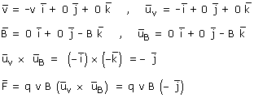
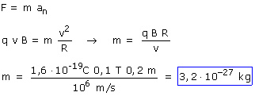

a)
La partícula se mueve en el plano de la pantalla y el campo magnético es perpendicular a ella y está dirigido hacia adentro
|
 |

La partícula sufrirá una fuerza q·v·B (Módulo), perpendicular a la velocidad y al campo y su trayectoria será una circunferencia
|
|
 En la expresión del módulo de la fuerza la carga se pone sin signo |